Descubra o que o seu nascimento revela sobre você
Comece pela sua data de nascimento. A partir dela, vamos identificar seu signo e a fase da Lua daquele dia.

Leitura de caráter interpretativo e de entretenimento/autoconhecimento.
Sua energia solar está ligada a
Ouça sua leitura ou avance quando quiser.
Você nasceu durante a
Na astrologia, a Lua é usada como símbolo do mundo emocional, hábitos e respostas instintivas.
Ouça sua leitura ou avance quando quiser.
Agora preciso de alguns detalhes
A cidade e o horário são necessários para que, depois do pagamento, o sistema possa montar um mapa astral completo com ascendente e casas.
, esta parte foi escolhida para o seu perfil
Ouça até o final. O próximo passo será aberto automaticamente.
Ouça sua leitura ou avance quando quiser.
Para qual e-mail devemos enviar o acesso e a cópia do seu Mapa Astral?
Seu relatório personalizado e o link de acesso permanente serão associados com segurança a este endereço.
, veja sua condição especial abaixo:
Ouça sua análise final enquanto aproveita o valor promocional por tempo limitado.
Seu Mapa Astral Completo + 4 Bônus Exclusivos
Após a confirmação do pagamento, seu mapa individual será gerado imediatamente na tela com todas as interpretações de Sol, Lua, Ascendente, Casas e Rituais.
- ✓ Mapa Astral Completo Personalizado (Sol, Lua, Ascendente e Casas)
- ✓ Bônus 1: Guia de Desbloqueio e Cura da sua Sombra Cósmica
- ✓ Bônus 2: Ritual Pessoal de Harmonização (Cristal Guia & Aroma Sagrado)
- ✓ Bônus 3: Sua Afirmação Diária de Poder & Prosperidade
- ✓ Bônus 4: Download em PDF para imprimir ou salvar quando quiser
"Gente, eu chorei lendo meu mapa. A parte da Lua descreveu exatamente os bloqueios que eu tive nos meus últimos relacionamentos. Valeu cada centavo!"
"Eu sempre fui cético com horóscopo de jornal, mas esse mapa é outro nível. O detalhamento do ascendente e da carreira clareou decisões que eu precisava tomar faz tempo."
"O ritual com o cristal guia virou minha rotina matinal. Parece que a mente fica mais leve e focada. Recomendo de olhos fechados."
Como recebo o acesso ao meu Mapa Astral?
O acesso é imediato! Assim que o pagamento for confirmado na Lowify, seu mapa completo é montado e aberto nesta mesma tela, além de receber uma URL segura para salvar e consultar quando quiser.
E se eu não souber a hora exata do nascimento?
Não tem problema! Nosso sistema calcula o mapa pelo método tradicional do Amanhecer Solar, ancorando os arquétipos na jornada do seu Sol com altíssima precisão interpretativa.
Posso imprimir ou salvar em PDF?
Sim! O relatório conta com um botão dedicado para "Salvar em PDF / Imprimir" com formatação limpa e diagramação especial para folhas A4.
Ouça até o final para liberar o checkout.